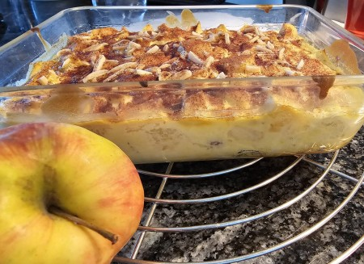

| Zutaten: | |
| 3-4 | Äpfel |
| 250g | Rahmquark |
| 2 | Eier |
| 1 Pack | Vanillezucker |
| 1+2 El | Zucker |
| 2 El | Rosinen |
| 1-2 El | Mandelstifte |
| 1 Tl | Zimt |
3-4 Apfel, schälen, Kerngehäuse entfernen und in ca. 1x1cm grosse Stücke. schneiden
Rahmquark, Eier, Vanillezucker, 1El. Zucker, vermischen
2El. Rosinen dazugeben
Alles in eine Form geben
1-2El. Mandelstifte darüberstreuen
2El. Zucker + 1 Tl.Zimt vermischen und darüberstreuen.
35Min. bei 180°C backen.
Sandra Keller
Schmeckt fein, RE 2026